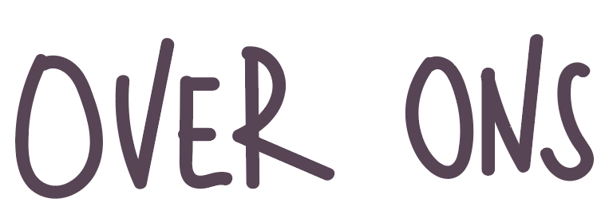

ons
anneke

Ik ben Anneke Slagter, 21 jaar, een nieuwsgierig type met een nog beter gevoel voor humor. Ik kijk altijd eerst rustig om me heen voordat ik wat zeg, en dat zorgt vaak voor verrassende inzichten. Met mijn kritische blik op de wereld weet ik dat een flinke portie humor het leven een stuk makkelijker maakt. En eerlijk is eerlijk, als iemand valt, moet ik eerst lachen voordat ik check of alles oké is.
rosa
Mijn naam is Rosa Overberg, maar noem me gerust je favoriete ongevraagde raadgever. Ik ben 22 jaar oud, geboren in het zonnige Mozambique, maar opgegroeid in het altijd gezellige Nederland. En guess what? Ik woon nog thuis bij mijn ouders, met een hond die meer loyaliteit toont dan je ex, en een kat die je waarschijnlijk veroordeelt door zijn blik alleen al. Maar even serieus, ik ben hier om jouw problemen aan te pakken met een flinke dosis humor, brutaliteit en ja, af en toe iets wat je moet verwerken met een drankje. Als je denkt dat we hier lief gaan doen... think again. Want als jij niet om je eigen problemen kunt lachen, dan doe ik het wel voor je.
julia
Heyo allemaal, ik ben Julia Wang. Een 22-jarige meid, geboren in een Chinese family met 1 broer en 2 zussen. Ik ben niet sociaal en zit liever achter mijn scherm te gamen, maar weet dat ik ondertussen met plezier naar jullie problemen luister. If you can't laugh at your own problems, I will.